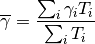
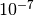
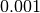
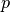

|
A Discrete-Event Network Simulator
|
Models |
|
|
A Discrete-Event Network Simulator
|
Models |
To test and validate the ns-3 LTE module, several test suites are provided which are integrated with the ns-3 test framework. To run them, you need to have configured the build of the simulator in this way:
./waf configure --enable-tests --enable-modules=lte --enable-examples
./test.py
The above will run not only the test suites belonging to the LTE module, but also those belonging to all the other ns-3 modules on which the LTE module depends. See the ns-3 manual for generic information on the testing framework.
You can get a more detailed report in HTML format in this way:
./test.py -w results.html
After the above command has run, you can view the detailed result for each test by opening the file results.html with a web browser.
You can run each test suite separately using this command:
./test.py -s test-suite-name
For more details about test.py and the ns-3 testing framework, please refer to the ns-3 manual.
The test suite lte-downlink-sinr checks that the SINR calculation in downlink is performed correctly. The SINR in the downlink is calculated for each RB assigned to data transmissions by dividing the power of the intended signal from the considered eNB by the sum of the noise power plus all the transmissions on the same RB coming from other eNBs (the interference signals):
In general, different signals can be active during different periods
of time. We define a chunk as the time interval between any two
events of type either start or end of a waveform. In other words, a
chunk identifies a time interval during which the set of active
waveforms does not change. Let  be the generic chunk,
be the generic chunk,
 its duration and its SINR,
calculated with the above equation. The calculation of the average
SINR to be used for CQI feedback reporting
uses the following formula:
its duration and its SINR,
calculated with the above equation. The calculation of the average
SINR to be used for CQI feedback reporting
uses the following formula:

The test suite checks that the above calculation is performed correctly in the simulator. The test vectors are obtained offline by an Octave script that implements the above equation, and that recreates a number of random transmitted signals and interference signals that mimic a scenario where an UE is trying to decode a signal from an eNB while facing interference from other eNBs. The test passes if the calculated values are equal to the test vector within a tolerance of . The tolerance is meant to account for the approximation errors typical of floating point arithmetic.
The test suite lte-uplink-sinr checks that the SINR calculation in uplink is performed correctly. This test suite is identical to lte-downlink-sinr described in the previous section, with the difference than both the signal and the interference now refer to transmissions by the UEs, and reception is performed by the eNB. This test suite recreates a number of random transmitted signals and interference signals to mimic a scenario where an eNB is trying to decode the signal from several UEs simultaneously (the ones in the cell of the eNB) while facing interference from other UEs (the ones belonging to other cells).
The test vectors are obtained by a dedicated Octave script. The test passes if the calculated values are equal to the test vector within a tolerance of which, as for the downlink SINR test, deals with floating point arithmetic approximation issues.
The test suite lte-earfcn checks that the carrier frequency used by the LteSpectrumValueHelper class (which implements the LTE spectrum model) is done in compliance with [TS36101], where the E-UTRA Absolute Radio Frequency Channel Number (EARFCN) is defined. The test vector for this test suite comprises a set of EARFCN values and the corresponding carrier frequency calculated by hand following the specification of [TS36101]. The test passes if the carrier frequency returned by LteSpectrumValueHelper is the same as the known value for each element in the test vector.
The test suite lte-link-adaptation provides system tests recreating a scenario with a single eNB and a single UE. Different test cases are created corresponding to different SNR values perceived by the UE. The aim of the test is to check that in each test case the chosen MCS corresponds to some known reference values. These reference values are obtained by re-implementing in Octave (see src/lte/test/reference/lte_amc.m) the model described in Section Adaptive Modulation and Coding for the calculation of the spectral efficiency, and determining the corresponding MCS index by manually looking up the tables in [R1-081483]. The resulting test vector is represented in Figure Test vector for Adaptive Modulation and Coding.
The MCS which is used by the simulator is measured by obtaining the tracing output produced by the scheduler after 4ms (this is needed to account for the initial delay in CQI reporting). The SINR which is calcualted by the simulator is also obtained using the LteSinrChunkProcessor interface. The test passes if both the following conditions are satisfied:
- the SINR calculated by the simulator correspond to the SNR of the test vector within an absolute tolerance of ;
- the MCS index used by the simulator exactly corresponds to the one in the test vector.
Test vector for Adaptive Modulation and Coding
The test suite lte-interference` provides system tests recreating an inter-cell interference scenario with two eNBs, each having a single UE attached to it and employing Adaptive Modulation and Coding both in the downlink and in the uplink. The topology of the scenario is depicted in Figure Topology for the inter-cell interference test. The parameter represents the distance of each UE to the eNB it is attached to, whereas the parameter represent the interferer distance. We note that the scenario topology is such that the interferer distance is the same for uplink and downlink; still, the actual interference power perceived will be different, because of the different propagation loss in the uplink and downlink bands. Different test cases are obtained by varying the and parameters.
Topology for the inter-cell interference test
The test vectors are obtained by use of a dedicated octave script (available in src/lte/test/reference/lte_link_budget_interference.m), which does the link budget calculations (including interference) corresponding to the topology of each test case, and outputs the resulting SINR and spectral efficiency. The latter is then used to determine (using the same procedure adopted for Adaptive Modulation and Coding Tests. We note that the test vector contains separate values for uplink and downlink.
The test suite lte-rr-ff-mac-scheduler creates different test cases with a single eNB and several UEs, all having the same Radio Bearer specification. In each test case, the UEs see the same SINR from the eNB; different test cases are implemented by using different distance among UEs and the eNB (i.e., therefore having different SINR values) and different numbers of UEs. The test consists on checking that the obtained throughput performance is equal among users and matches a reference throughput value obtained according to the SINR perceived within a given tolerance.
The test vector is obtained according to the values of transport block
size reported in table 7.1.7.2.1-1 of [TS36213], considering an
equal distribution of the physical resource block among the users
using Resource Allocation Type 0 as defined in Section 7.1.6.1 of
[TS36213]. Let  be the TTI duration,
be the TTI duration,  be the
number of UEs,
be the
number of UEs,  the transmission bandwidth configuration in
number of RBs, the RBG size,
the transmission bandwidth configuration in
number of RBs, the RBG size,  the modulation and
coding scheme in use at the given SINR and
the modulation and
coding scheme in use at the given SINR and  be the
transport block size in bits as defined by 3GPP TS 36.213. We first
calculate the number
be the
transport block size in bits as defined by 3GPP TS 36.213. We first
calculate the number  of RBGs allocated to each user as
of RBGs allocated to each user as
The reference throughput  in bit/s achieved by each UE is then calculated as
in bit/s achieved by each UE is then calculated as
The test passes if the measured throughput matches with the reference throughput within a relative tolerance of 0.1. This tolerance is needed to account for the transient behavior at the beginning of the simulation (e.g., CQI feedback is only available after a few subframes) as well as for the accuracy of the estimator of the average throughput performance over the chosen simulation time (0.4s). This choice of the simulation time is justified by the need to follow the ns-3 guidelines of keeping the total execution time of the test suite low, in spite of the high number of test cases. In any case, we note that a lower value of the tolerance can be used when longer simulations are run.
In Figure fig-lenaThrTestCase1, the curves labeled “RR” represent the test values calculated for the RR scheduler test, as a function of the number of UEs and of the MCS index being used in each test case.
Test vectors for the RR and PF Scheduler in the downlink in a scenario where all UEs use the same MCS.
The test suite lte-pf-ff-mac-scheduler creates different test cases with a single eNB, using the Proportional Fair (PF) scheduler, and several UEs, all having the same Radio Bearer specification. The test cases are grouped in two categories in order to evaluate the performance both in terms of the adaptation to the channel condition and from a fairness perspective.
In the first category of test cases, the UEs are all placed at the
same distance from the eNB, and hence all placed in order to have the
same SINR. Different test cases are implemented by using a different
SINR value and a different number of UEs. The test consists on
checking that the obtained throughput performance matches with the
known reference throughput up to a given tolerance. The expected
behavior of the PF scheduler when all UEs have the same SNR is that
each UE should get an equal fraction of the throughput obtainable by a
single UE when using all the resources. We calculate the reference
throughput value by dividing the throughput achievable by a single UE
at the given SNR by the total number of UEs.
Let be the TTI duration, the transmission
bandwidth configuration in number of RBs, the modulation and
coding scheme in use at the given SINR and be the
transport block size as defined in [TS36213]. The reference
throughput in bit/s achieved by each UE is calculated as
The curves labeled “PF” in Figure fig-lenaThrTestCase1 represent the test values calculated for the PF scheduler tests of the first category, that we just described.
The second category of tests aims at verifying the fairness of the PF
scheduler in a more realistic simulation scenario where the UEs have a
different SINR (constant for the whole simulation). In these conditions, the PF
scheduler will give to each user a share of the system bandwidth that is
proportional to the capacity achievable by a single user alone considered its
SINR. In detail, let be the modulation and coding scheme being used by
each UE (which is a deterministic function of the SINR of the UE, and is hence
known in this scenario). Based on the MCS, we determine the achievable
rate for each user using the
procedure described in Section~ref{sec:pfs}. We then define the
achievable rate ratio of each user as
Let now be the throughput actually achieved by the UE , which
is obtained as part of the simulation output. We define the obtained throughput
ratio of UE as
The test consists of checking that the following condition is verified:
if so, it means that the throughput obtained by each UE over the whole simulation matches with the steady-state throughput expected by the PF scheduler according to the theory. This test can be derived from [Holtzman2000] as follows. From Section 3 of [Holtzman2000], we know that
where  is a constant. By substituting the above into the
definition of given previously, we get
is a constant. By substituting the above into the
definition of given previously, we get
which is exactly the expression being used in the test.
Figure Throughput ratio evaluation for the PF scheduler in a scenario
where the UEs have MCS index presents the results obtained in a test case with
UEs that are located at a distance from the base
station such that they will use respectively the MCS index  . From the figure, we note that, as expected, the obtained throughput is
proportional to the achievable rate. In other words, the PF scheduler assign
more resources to the users that use a higher MCS index.
. From the figure, we note that, as expected, the obtained throughput is
proportional to the achievable rate. In other words, the PF scheduler assign
more resources to the users that use a higher MCS index.

Throughput ratio evaluation for the PF scheduler in a scenario where the UEs have MCS index
The aim of the system test is to verify the integration of the BuildingPathlossModel with the lte module. The test exploits a set of three pre calculated losses for generating the expected SINR at the receiver counting the transmission and the noise powers. These SINR values are compared with the results obtained from a LTE simulation that uses the BuildingPathlossModel. The reference loss values are calculated off-line with an Octave script (/test/reference/lte_pathloss.m). Each test case passes if the reference loss value is equal to the value calculated by the simulator within a tolerance of  dB, which accouns for numerical errors in the calculations.
The test suite lte-test-phy-error-model generates nine test cases with single eNB and a various number of UEs, all having the same Radio Bearer specification. Each test is designed for evaluating the error rate perceived by a specific TB size in order to verify that it corresponds to the expected values according to the BLER generated for CB size analog to the TB size. This means that, for instance, the test will check that the performance of a TB of bits is analogous to the one of a a CB size of bits by collecting the performance of a user which has been forced the generation of a such TB size according to the distance to eNB. In order to significantly test the BER at MAC level, we modified the Adaptive Modulation and Coding (AMC) module, the LteAmc class, for making it less robust to channel conditions by adding a configurable BER parameter (called Ber in the ns3 attribute system) which enable the selection of the desired BER at MAC level when choosing the MCS to be used. In detail, the AMC module has been forced to select the AMC considering a BER of 0.01 (instead of the standard value equal to 0.00005). We note that, these values do not reflect actual BER since they come from an analytical bound which do not consider all the transmission chain aspects; therefore the resulted BER might be different.
The parameters of the nine test cases are reported in the following:
- 4 UEs placed 1800 meters far from the eNB, which implies the use of MCS 2 (SINR of -5.51 dB) and a TB of 256 bits, that in turns produce a BER of 0.33 (see point A in figure BLER for tests 1, 2, 3.).
- 2 UEs placed 1800 meters far from the eNB, which implies the use of MCS 2 (SINR of -5.51 dB) and a TB of 528 bits, that in turns produce a BER of 0.11 (see point B in figure BLER for tests 1, 2, 3.).
- 1 UE placed 1800 meters far from the eNB, which implies the use of MCS 2 (SINR of -5.51 dB) and a TB of 1088 bits, that in turns produce a BER of 0.02 (see point C in figure BLER for tests 1, 2, 3.).
- 1 UE placed 600 meters far from the eNB, which implies the use of MCS 12 (SINR of 4.43 dB) and a TB of 4800 bits, that in turns produce a BER of 0.3 (see point D in figure BLER for tests 4, 5.).
- 3 UEs placed 600 meters far from the eNB, which implies the use of MCS 12 (SINR of 4.43 dB) and a TB of 1632 bits, that in turns produce a BER of 0.55 (see point E in figure BLER for tests 4, 5.).
- 1 UE placed 470 meters far from the eNB, which implies the use of MCS 16 (SINR of 8.48 dB) and a TB of 7272 bits (segmented in 2 CBs of 3648 and 3584 bits), that in turns produce a BER of 0.14, since each CB has CBLER equal to 0.075 (see point F in figure BLER for test 6.).
BLER for tests 1, 2, 3.
BLER for tests 4, 5.

BLER for test 6.
The test verifies that in each case the obtained number of packets received correctly falls within the 99.9% confidence interval (CI) of a Binomial distribution where the parameter  is equal to , the parameter  is the total number of packets sent and the parameter
is the total number of packets sent and the parameter  is the number of packets correctly received. The value of the CI has been chosen for guaranteeing a sufficient margin on the errors due to the quantization of the MI values in the tables.
is the number of packets correctly received. The value of the CI has been chosen for guaranteeing a sufficient margin on the errors due to the quantization of the MI values in the tables.
The test suite lte-mimo aims at verifying both the effect of the gain considered for each Transmission Mode on the system performance and the Transmission Mode switching through the scheduler interface. The test consists on checking whether the amount of bytes received during a certain window of time (0.1 seconds in our case) corresponds to the expected ones according to the values of transport block size reported in table 7.1.7.2.1-1 of [TS36213], similarly to what done for the tests of the schedulers.
The test is performed both for Round Robin and Proportional Fair schedulers. The test passes if the measured throughput matches with the reference throughput within a relative tolerance of 0.1. This tolerance is needed to account for the transient behavior at the beginning of the simulation and the transition phase between the Transmission Modes.
The test suite lte-antenna checks that the AntennaModel integrated with the LTE model works correctly. This test suite recreates a simulation scenario with one eNB node at coordinates (0,0,0) and one UE node at coordinates (x,y,0). The eNB node is configured with an CosineAntennaModel having given orientation and beamwidth. The UE instead uses the default IsotropicAntennaModel. The test checks that the received power both in uplink and downlink account for the correct value of the antenna gain, which is determined offline; this is implemented by comparing the uplink and downlink SINR and checking that both match with the reference value up to a tolerance of which accounts for numerical errors. Different test cases are provided by varying the x and y coordinates of the UE, and the beamwidth and the orientation of the antenna of the eNB.
Two test suites lte-rlc-um-transmitter and lte-rlc-am-transmitter check that the UM RLC and the AM RLC implementation work correctly. Both these suites work by testing RLC instances connected to special test entities that play the role of the MAC and of the PDCP, implementing respectively the LteMacSapProvider and LteRlcSapUser interfaces. Different test cases (i.e., input test vector consisting of series of primitive calls by the MAC and the PDCP) are provided that check the behavior in the following cases:
- one SDU, one PDU: the MAC notifies a TX opportunity causes the creation of a PDU which exactly contains a whole SDU
- segmentation: the MAC notifies multiple TX opportunities that are smaller than the SDU size stored in the transmission buffer, which is then to be fragmented and hence multiple PDUs are generated;
- concatenation: the MAC notifies a TX opportunity that is bigger than the SDU, hence multiple SDUs are concatenated in the same PDU
- buffer status report: a series of new SDUs notifications by the PDCP is inteleaved with a series of TX opportunity notification in order to verify that the buffer status report procedure is correct.
In all these cases, an output test vector is determine manually from knowledge of the input test vector and knowledge of the expected behavior. These test vector are specialized for UM RLC and AM RLC due to their different behavior. Each test case passes if the sequence of primitives triggered by the RLC instance being tested is exacly equal to the output test vector. In particular, for each PDU transmitted by the RLC instance, both the size and the content of the PDU are verified to check for an exact match with the test vector.
The unit test suite epc-gtpu checks that the encoding and decoding of the GTP-U header is done correctly. The test fills in a header with a set of known values, adds the header to a packet, and then removes the header from the packet. The test fails if, upon removing, any of the fields in the GTP-U header is not decoded correctly. This is detected by comparing the decoded value from the known value.
Two test suites (epc-s1u-uplink and epc-s1u-downlink) make sure that the S1-U interface implementation works correctly in isolation. This is achieved by creating a set of simulation scenarios where the EPC model alone is used, without the LTE model (i.e., without the LTE radio protocol stack, which is replaced by simple CSMA devices). This checks that the interoperation between multiple EpcEnbApplication instances in multiple eNBs and the EpcSgwPgwApplication instance in the SGW/PGW node works correctly in a variety of scenarios, with varying numbers of end users (nodes with a CSMA device installed), eNBs, and different traffic patterns (packet sizes and number of total packets). Each test case works by injecting the chosen traffic pattern in the network (at the considered UE or at the remote host for in the uplink or the downlink test suite respectively) and checking that at the receiver (the remote host or each considered UE, respectively) that exactly the same traffic patterns is received. If any mismatch in the transmitted and received traffic pattern is detected for any UE, the test fails.
The test suite epc-tft-classifier checks in isolation that the behavior of the EpcTftClassifier class is correct. This is performed by creating different classifier instances where different TFT instances are activated, and testing for each classifier that an heterogeneous set of packets (including IP and TCP/UDP headers) is classified correctly. Several test cases are provided that check the different matching aspects of a TFT (e.g. local/remote IP address, local/remote port) both for uplink and downlink traffic. Each test case corresponds to a specific packet and a specific classifier instance with a given set of TFTs. The test case passes if the bearer identifier returned by the classifier exactly matches with the one that is expected for the considered packet.
The test suite lte-epc-e2e-data ensures the correct end-to-end functionality of the LTE-EPC data plane. For each test case in this suite, a complete LTE-EPC simulation scenario is created with the following characteristics:
- a given number of eNBs
- for each eNB, a given number of UEs
- for each UE, a given number of active EPS bearers
- for each active EPS bearer, a given traffic pattern (number of UDP packets to be transmitted and packet size)
Each test is executed by transmitting the given traffic pattern both in the uplink and in the downlink, at subsequent time intervals. The test passes if all the following conditions are satisfied:
- for each active EPS bearer, the transmitted and received traffic pattern (respectively at the UE and the remote host for uplink, and vice versa for downlink) is exactly the same
- for each active EPS bearer and each direction (uplink or downlink), exactly the expected number of packet flows over the corresponding RadioBearer instance